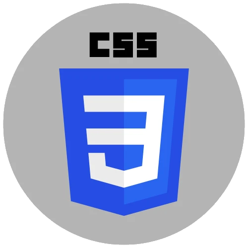
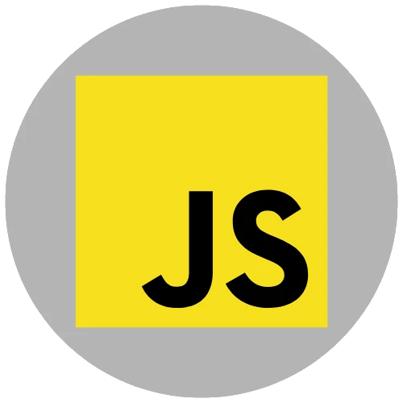
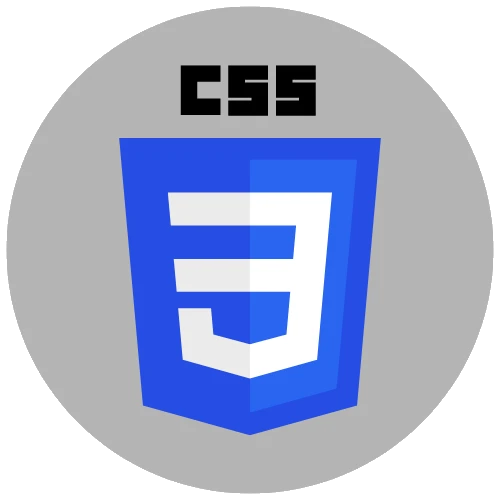
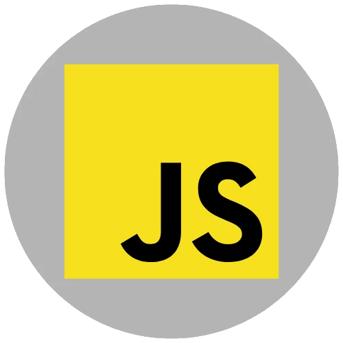

I am an American Football referee, Human Resources Analyst, and aspiring data analyst passionate about leveraging Python, SQL, and Excel to unearth actionable insights in HR and people analytics.
Seeking a dynamic role to apply analytical skills in generating reports, identifying optimization opportunities, and contributing to strategic decision-making.
With a background in process management and a constant focus on the details, I aim to efficiently translate data into impactful solutions while fostering teamwork and clear communication.
Feel free to explore more about my journey and skills on my LinkedIn profile or drop me an email. I'm enthusiastic about the prospect of leveraging data to optimize processes within your organization.
Data Analysis projects
People Analytics project from a Kaggle database. I use Python and Power BI. I did a descriptive database analysis using ISO30414, specifically analyzing resignations.
This project is developed in Python. Here, I analyze a Hotel Booking database to understand their customers booking preferences, their market segment, and much more. I also started practicing with Machine Learning models.
Football Americano Argentina | Mar 2018 - Jun 2023
Built a system to measure the performance of officers during the football season. 90% of good calls were recorded during the season. I documented the process to give it continuity.
Executed evaluation methods to measure the development of new candidates and improve training strategies. I developed questionnaires to gather data and identify areas for improvement. Officers were managed according to their objectives.
Designed a manual that allows us to continue the training course. The manual enabled the new trainers to join without difficulty.
#lidership #innovation #clarity #commitment
I ascended from a training assistant to an Instructor through the application of HR insights, demonstrating a proactive approach to optimizing organizational processes and fostering professional growth.
Treasurer
Invercoop Coop. de Cred. | Ago 2005 - Jun 2017
Analyzed financial data and managed daily operations.
Operated with data to optimize budget allocation.
Led management strategies to ensure efficient financial operations.
Managed employee initiatives, consultations, and facilitated conflict resolution. I implemented the ‘casual Friday’, which led to better staff cohesion.
The promotion from cadet to treasurer was a great challenge. In this position, I had to learn to make crucial decisions and manage the staff for the development of daily activities. Here, I felt that I had reached my professional ceiling, and I decided to face new challenges.
Technical Skills:
Data Management: Database cleaning, Data collection, Statistical Analysis, ETL
Software: Proficient in Microsoft Office (Word, Excel, PowerPoint, Outlook).


 


